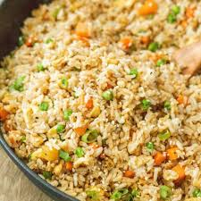

Back To Home
Fried Rice

This quick and flavorful fried rice is the perfect way to use up leftover rice and transform it into a satisfying meal. Made with fluffy rice, crisp vegetables, scrambled eggs, and a savory blend of soy sauce and sesame oil, it's a versatile dish that comes together in under 30 minutes. Customize it with your favorite proteins like chicken, shrimp, or tofu for a complete, restaurant-style experience right at home. Ideal for busy weeknights or meal prep, this fried rice recipe is a family favorite that's as delicious as it is simple to make.
Ingredients
- 2 cups of day-old cooked rice
- 2 tablespoons vegetable oil
- 2 eggs
- Onions
- 2 garlic cloves
- Mixed vegetables
- Soy sauce
- Sesame oil
- Salt and pepper
Have you prepared all the ingredients? Alright, let's get to cooking
- Dice your onions, mince the garlic and chop any vegetables.
- Crack and beat the eggs in a small bowl.
- Make sure your rice is cold and clump-free (day-old rice works best).
- Heat 1 tablespoon of oil in a large skillet or wok over medium-high heat.
- Pour in the beaten eggs and scramble until fully cooked.
- Remove the eggs from the pan and set aside.
- Add another 1 tablespoon of oil to the pan.
- Sauté the onions and garlic for about 1-2 minutes, until fragrant and translucent.
- Add your mixed vegetables to the pan.
- Stir-fry for 2-3 minutes, until they're tender-crisp.
- Add the cold, cooked rice to the pan.
- Use a spatula to break up clumps and mix everything evenly.
- Pour in the soy sauce and sesame oil.
- Stir well to coat the rice evenly.
- Season with salt and pepper to taste.
- Return the scrambled eggs to the pan.
- Mix well to combine and heat through.
- Toss in the chopped green onions just before serving.
- Serve hot.